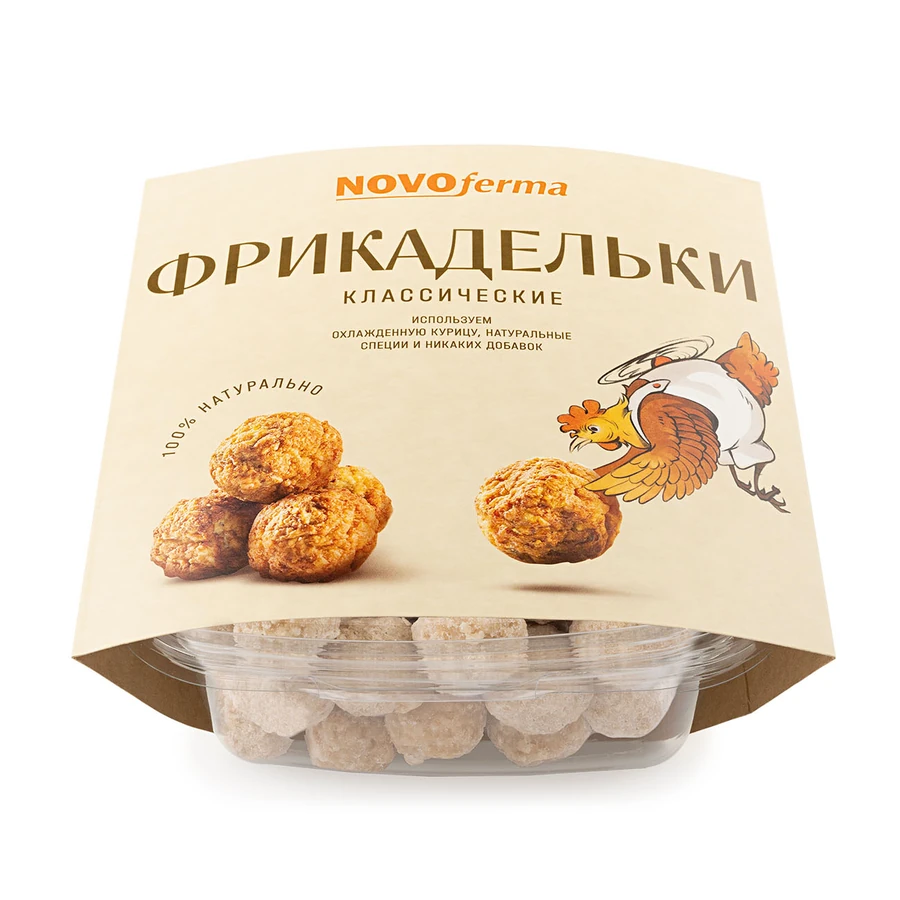
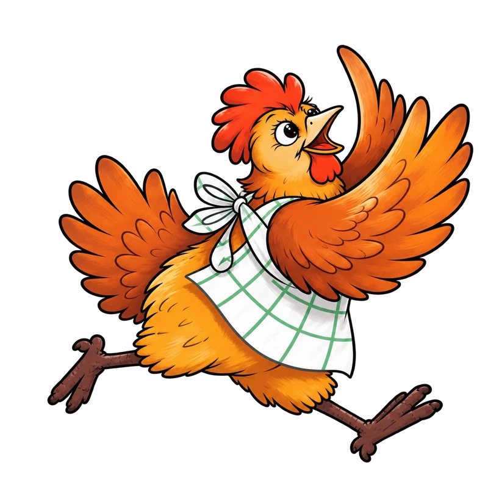

Это Новоферма
Вкусно,
когда
вместе.
Новоферма — компания из Санкт-Петербурга. Мы производим замороженные полуфабрикаты из курицы и индейки.
Котлеты и биточки, фрикадельки, наггетсы, куриный попкорн и стрипсы — выбирайте свой вкус.

Прозрачная упаковка
Продукт,
который видно.
Упаковываем продукты в прозрачные контейнеры: содержимое видно до покупки.
По информации компании, в основе продукции — охлаждённое мясо птицы, а на производстве используется австрийское и итальянское оборудование.
Смотреть продуктыНаши герои
С характером.
И аппетитом.
Наши курочки добавляют упаковке характер, а знакомым вкусам — немного домашнего тепла.

Магазинам, кафе и ресторанам
Познакомимсякак партнёры?
Расскажите о вашем магазине или заведении — обсудим сотрудничество.
Обсудить поставки